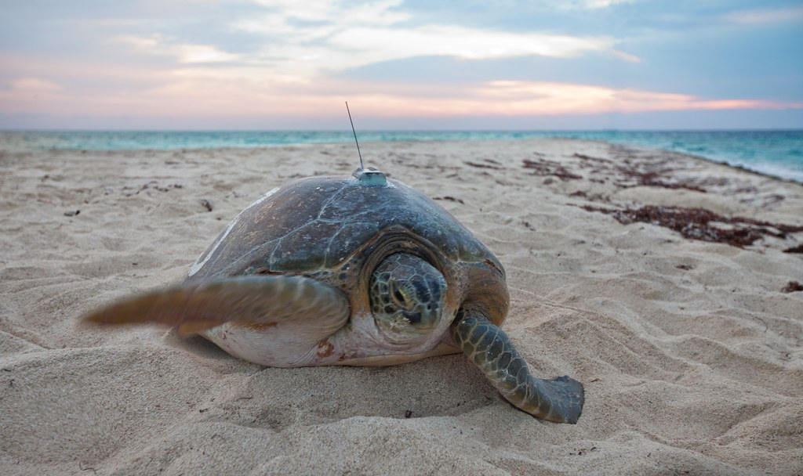
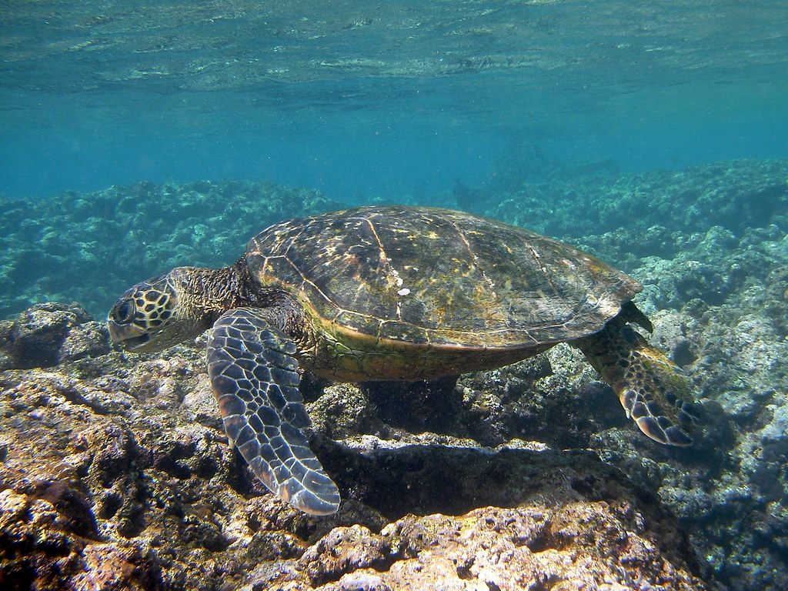
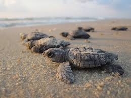
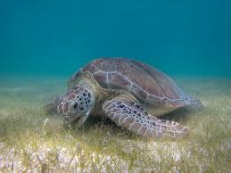
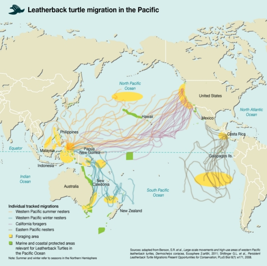
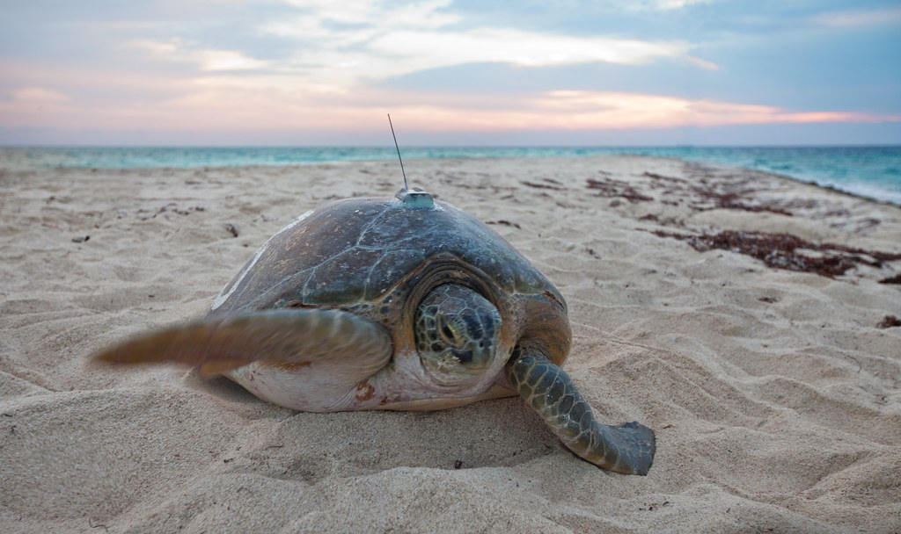
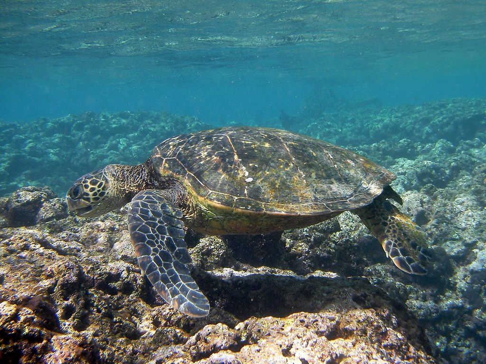
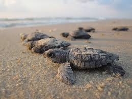
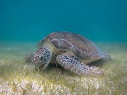
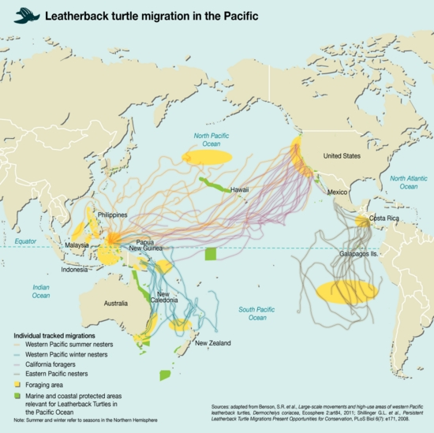

Sea Turtles
Sea Turtles are some of the most ancient creatures on this Earth today. There are seven species of sea turtles and they are found in both warm and cool waters. Sea Turtles live for about 80 years, depending on the species. They have been alive for many years, but the population is quickly decreasing. The main factor that sea turtles are quickly dying is because more and more plastic trash is found in the ocean, causing Sea Turtles to die because they mistake it for their food. Sea Turtles end up eating the plastic or getting tangled in it, causing death. I feel strongly about this topic because Sea Turtles are one of my favorite animals and people need to respect the Earth and animals, in order if they want them to survive.
How you can help...
Many people think that they can't do anything to help endangered species, but there are many ways you can help. First of all, no matter what, recycle or pick up any trash you see wherever you go. Also, you can contact an animal shelter if you see an injuried Sea Turtle anywhere, and don't forget to use reusable water bottles or shopping bags. Also, try to limit the amount of plastic straws that you are using. Doing all these things won't stop Sea Turtles from being endangered, but it is a small step that will help greatly. Call (866)755-6622 to report a stranded or injuried marine animal.
 









Diet and Habitat
Sea Turtles have a different diet depending on the species, they can be carnivors, herbivors, or even omnivors. Researchers can tell the diet of a sea turtle, depending on the jaw type. However, as the Sea Turtle gets older, their diets can vary and change. Also, one of the main foods for Sea Turtles is jellyfish, which can easily be mistaken with plastic bags in the ocean.
Sea Turtles are mostly found along tropical coasts and they tend to swim in shallow water. However, Sea Turtles nest on tropical and even subtropical beaches, but they do migrate long distances. Sea Turtles are more likey to be found in tropical regions, rather than polar regions.